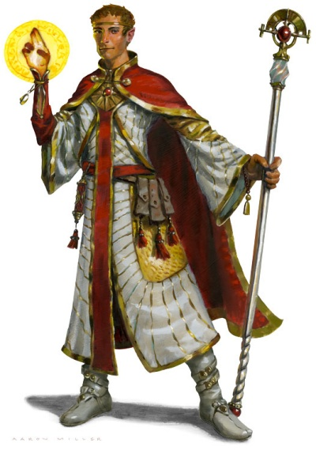

Demi-elfe
Fréquentant deux mondes, mais n'appartenant vraiment à aucun des deux, les demi-elfes combinent ce que certains disent être les meilleures qualités de leurs parents elfes et humains : la curiosité et la créativité humaine, et une ambition tempérée par des sens raffinés, l'amour de la nature et les goûts artistiques des elfes. Certains demi-elfes vivent parmi les humains, un peu en marge de par leurs différences physiques et émotionnelles, en regardant vieillir leurs amis et leurs proches alors que le temps les touche à peine. D'autres vivent chez les elfes, devenant adultes alors que leurs pairs continuent de vivre comme des enfants, s'agitant de plus en plus dans ces royaumes elfiques intemporels. Beaucoup d'autres demi-elfes, incapables de s'intégrer dans quelle société que ce soit, choisissent une vie d'errance solitaire, ou rejoignent d'autres marginaux et exclus pour partager une vie d'aventures.
Issus de deux mondes
Clignant des yeux face au soleil couchant, Flint distingua la silhouette d'un homme qui marchait sur le sentier. Prudent, il se mit à l'ombre d'un grand pin pour mieux voir. L'homme se mouvait avec la gracieuse souplesse héritée des elfes, mais son corps avait la force et la carrure de quelqu'un appartenant au monde des humains. Sa capuche verte abritait une barbe auburn et un visage tanné. Il portait un arc en bandoulière et une épée au flanc. Ses vêtements de cuir souple étaient frappés des motifs complexes qu'affectionnaient les elfes. Mais aucun elfe sur Krynn n'avait de barbe...
« Tanis ? » interrogea Flint.
« Lui-même. » Le nouveau venu arbora un large sourire et ouvrit grand les bras. Flint fut soulevé de terre. Le nain serra son vieil ami un instant, puis reprenant un peu de dignité, se dégagea de l’étreinte du demi-elfe.
- Margaret Weis & Tracy Hickman
Dragons d'un crépuscule automnal
Pour les humains, un demi-elfe ressemble à un elfe, et pour un elfe il paraît humain. Bien qu'ils soient par la taille proche de leurs parents, ils ne sont jamais aussi sveltes que les elfes ou aussi robustes que les humains. Leur taille varie entre 1,50 et 1,80 mètre, avec un poids situé entre 50 et 90 kg, les hommes étant légèrement plus grands et plus lourds que les femmes. Les hommes demi-elfes possèdent une pilosité faciale, et se laissent parfois pousser la barbe pour dissimuler leur héritage elfique. La complexion et les caractéristiques physiques d'un demi-elfe sont un mélange entre celles de leurs parents humains et elfes, montrant ainsi une variété encore plus prononcée que celle observée chez les deux espèces. Ils ont généralement les yeux de leur parent elfe.
Diplomates ou vagabonds
Les demi-elfes n'ont pas de terres leurs appartenant, bien qu'ils soient les bienvenus dans les cités humaines, et presque autant acceptés dans les forêts elfiques. Dans les grandes cités ou régions où elfes et humains interagissent régulièrement, les demi-elfes sont parfois assez nombreux pour former une petite communauté. Ils apprécient la compagnie d'autres demi-elfes, les seules personnes pouvant réellement comprendre ce que c'est que de vivre entre ces deux mondes. Dans la plupart des coins du monde par contre, les demi-elfes sont tellement peu nombreux que l'un d'eux pourrait passer des années sans rencontrer un seul de son espèce. Certains demi-elfes préfèrent éviter la compagnie, voyageant à travers les étendues sauvages en tant que trappeurs, forestiers, chasseurs ou aventuriers, visitant ainsi des contrées oubliées. Comme les elfes, ils sont entraînés par une soif de voyage liée à leur grande longévité. D'autres, au contraire, se jettent dans les méandres de la société, se servant de leur charisme et de leurs talents sociaux innés pour exceller en tant que diplomates ou escrocs.
Noms demi-elfes
Les demi-elfes suivent les conventions humaines ou elfiques. Comme pour souligner le fait qu'ils n'appartiennent à aucune société, les demi-elfes élevés parmi les humains reçoivent souvent un nom elfique, tandis que ceux élevés parmi les elfes prennent souvent un nom humain.
Traits
Votre personnage demi-elfe a des capacités en commun avec les elfes, et d'autres qui sont uniques aux demi-elfes.
Augmentation de caractéristiques. Votre Charisme augmente de 2 et deux autres caractéristiques de votre choix augmentent de 1.
Âge. Les demi-elfes vieillissent au même rythme que les humains, et atteignent l'âge adulte vers leurs 20 ans. Ils vivent cependant beaucoup plus longtemps que les humains, dépassant souvent les 180 ans.
Taille. Les demi-elfes ont plus ou moins la même taille que les humains, de 1,50 à 1,85 m. Votre taille est Moyenne (M).
Vitesse. Votre vitesse de base est de 9 mètres.
Vision dans le noir. Grâce à votre sang elfe, vous avez une vision supérieure dans le noir et les conditions de faible éclairage. Vous pouvez voir à 18 mètres dans une lumière faible comme vous verriez avec une lumière vive, et dans le noir comme vous verriez avec une lumière faible. Dans le noir, vous ne discernez pas les couleurs, uniquement des nuances de gris.
Ascendance féerique. Vous avez un avantage aux jets de sauvegarde contre les effets de charme et la magie ne peut pas vous endormir.
Polyvalence. Vous gagnez la maîtrise de deux compétences de votre choix.
Langues. Vous pouvez parler, lire et écrire le commun, l'elfique, et une langue supplémentaire de votre choix.
Traduit par Pils et blueace